pacman::p_load(ggstatsplot, CGPfunctions, readxl, lubridate, tidyverse)Take Home Exercise 4
1. Overview
In this exercise, I will explore the time series data pattern for Singapore bi-lateral trade from January 2020 to December 2022. The objective is to discover yearly and monthly trend for trade with different countries through different analytical visualization techniques.
2. Data Preparation
2.1 Getting Ready
In this exercise, I will use ggplot2 and its extension; CPGfunction for slopegraph; readxl, lubridate and tidyverse for data transformation.
2.2 Import Data
The original excel file contains multiple worksheet. I use the below code chunk to extract the data from the selected excel spreadsheets and range, and store it as “Import_trade” and “Export_trade” data frame.
Import_trade <- read_excel("data/merchandisetrade.xlsx", sheet = "T1", range = "A10:AK129")Export_trade <- read_excel("data/merchandisetrade.xlsx", sheet = "T2", range = "A10:AK101")2.3 Data Preparation
The original dataset was not organized in a user-friendly way for time series analysis, I perform below data wrangling steps to prepare a cleaner set of data for later analysis and visualization:
- The original excel table is in a wider table format which is not user-friendly for time-series analysis. The below code chunk transforms the data from wider to longer format, and select the data afer January 2020.
Import_trade2 <- pivot_longer(Import_trade, cols = 2:37, names_to = "Month year", values_to = "Trade Value" )Export_trade2 <- pivot_longer(Export_trade, cols = 2:37, names_to = "Month year", values_to = "Trade Value" )- Some of merchandise value are in million dollars and some are in thousand dollars. I standardize the trade value by creating a multiplier and convert all into single dollar value.
Export_trade3 <- Export_trade2 %>%
mutate(multiplier = ifelse(str_detect(`Data Series`, "Million"), 1000000,
ifelse(str_detect(`Data Series`, "Thousand"), 1000, 1))) %>%
mutate(`Trade Value` = multiplier * `Trade Value`) %>%
select(-c("multiplier"))
Import_trade3 <- Import_trade2 %>%
mutate(multiplier = ifelse(str_detect(`Data Series`, "Million"), 1000000,
ifelse(str_detect(`Data Series`, "Thousand"), 1000, 1))) %>%
mutate(`Trade Value` = multiplier * `Trade Value`) %>%
select(-c("multiplier"))- Join the two data frame to one data frame and create one column for import trade value and one column for export trade value in dollar value.
- Rename the column header for easier readibility.
- Clean all the non-number values in the dataset to avoid calculation errors.
- Derive the time stamp to month and year
- Select data between date range January 2020 to December 2022.
Combined <- full_join(Export_trade3, Import_trade3,
by = c("Data Series", "Month year"),
suffix = c(" Export", " Import"))%>%
rename("YearMon" = "Month year", "Country" = "Data Series") %>%
mutate(Country = str_replace(Country, "\\(Million Dollars\\)", "")) %>%
mutate(Country = str_replace(Country, "\\(Thousand Dollars\\)", "")) %>%
mutate(Country = str_trim(Country)) %>%
mutate(YearMon = ym(YearMon)) %>%
mutate(
Year = format(YearMon, format="%Y"),
Month = factor(month(YearMon),
levels=1:12,
labels=month.abb,
ordered=TRUE),
Quarter = quarter(YearMon)
)%>%
mutate(`Trade Value Export` = replace_na(`Trade Value Export`, 0)) %>%
mutate(`Trade Value Import` = replace_na(`Trade Value Import`, 0)) %>%
filter(YearMon < '2023-01-01' )- Dataset consist of total merchandise value, continent (such as America, Asia, Europe, etc) and individual country . I separate the data into “Combined_total”, and “Combined_country” for easier computation.
Combined_country <- Combined %>%
filter(!Country %in% c("America", "Asia", "Europe","Oceania","Africa","European Union", "Total Merchandise Exports", "Total Merchandise Imports"))
Combined_total <- Combined %>%
filter(str_detect(Country, "Total"))The final data looks like below:
head(Combined_country)# A tibble: 6 × 7
Country YearMon `Trade Value Export` Trade Value Impo…¹ Year Month Quarter
<chr> <date> <dbl> <dbl> <chr> <ord> <int>
1 Belgium 2022-12-01 432376000 103655000 2022 Dec 4
2 Belgium 2022-11-01 756814000 121773000 2022 Nov 4
3 Belgium 2022-10-01 350565000 88796000 2022 Oct 4
4 Belgium 2022-09-01 386724000 215978000 2022 Sep 3
5 Belgium 2022-08-01 570824000 132917000 2022 Aug 3
6 Belgium 2022-07-01 991586000 224676000 2022 Jul 3
# … with abbreviated variable name ¹`Trade Value Import`head(Combined_total)# A tibble: 6 × 7
Country YearMon Trade Value…¹ Trade…² Year Month Quarter
<chr> <date> <dbl> <dbl> <chr> <ord> <int>
1 Total Merchandise Exports 2022-12-01 55000084000 0 2022 Dec 4
2 Total Merchandise Exports 2022-11-01 54162780000 0 2022 Nov 4
3 Total Merchandise Exports 2022-10-01 56576348000 0 2022 Oct 4
4 Total Merchandise Exports 2022-09-01 62507132000 0 2022 Sep 3
5 Total Merchandise Exports 2022-08-01 63363749000 0 2022 Aug 3
6 Total Merchandise Exports 2022-07-01 64124991000 0 2022 Jul 3
# … with abbreviated variable names ¹`Trade Value Export`,
# ²`Trade Value Import`3. Data Visualisation
3.1 Line graph for Overall Trade
Line graph is used to show the overall and general direction of change in Singapore Merchandise Trade with Partners. This can help us to discover to overall trend and variability through the particular time span.
ggplot is used to plot the Total Import Value and Export Value , with X axis as Year-Month and Y axis as total trade value.
# Summarize and pivot datatable for line graph
Combined_total2 <- Combined_total %>%
group_by(YearMon) %>%
summarize(
TotalImport = sum(`Trade Value Import`),
TotalExport = sum(`Trade Value Export`)
) %>%
pivot_longer(
cols = c(`TotalImport`, `TotalExport`),
names_to = "Category",
values_to = "Value",
)
#plot graph with ggplot
ggplot(Combined_total2, aes(x = YearMon, y = Value, color = Category)) +
geom_line() +
scale_x_date(date_breaks = "1 month", date_labels = "%b %Y") +
scale_y_continuous(labels = scales::label_dollar(scale = 1/1000000, suffix ="M")) +
labs(title = "Singapore Merchandise Trade with Partners increased since 2020, but start to fall since 2022 Q3", subtitle = "Monthly Import and Export Trade from 2020 Jan to 2022 Dec") +
theme(axis.text.x = element_text(angle = 90, vjust = 1, hjust=1), panel.grid.minor = element_blank())The graph shows an upward trend, which represents a positive growth since Jan 2020. There are two big drop in Apr 2020 and Feb 2022. In Feb 2021, there is a sharp increase in both import and export trade, which is a sign of economic recovery. However, both Import and Export trade start to fall since 2022 Q3, which might represents the world economic downturn due to political and economic instability.
3.1 Trellis Line graph for Top 12 Trade Partners
Trellis Line graph is effective in separating individual countries trend. Top 12 countries in trade volume are selected to show the trend for Singapore significant partners.
ggplot and facewrap are used to build the trellis line graph. X axis represent the Year-Month, Y axis represents the trade value in million dollar, and two lines represent import and export trade respectively. The trellis graph is organized in the order of largest to smallest total trade value in each country.
#Calculate the total trade value for each countries
Trade_Value_Agg <- Combined_country %>%
group_by(Country) %>%
summarise(
TotalExport = sum(`Trade Value Export`),
TotalImport = sum(`Trade Value Import`),
) %>%
mutate(Totaltrade = TotalExport + TotalImport)
#Rank the top 10 countries in terms of export and import trade value
Top_countries <- Trade_Value_Agg %>%
arrange(desc(Totaltrade))%>%
top_n(12)#record the descending order in terms of total trade to reorder trellis chart
countryorder <- c(Top_countries$Country)#Transform the data table to longer table
Combined_country2 <- Combined_country %>%
filter(Country %in% Top_countries$Country)%>%
group_by(Country, YearMon) %>%
summarize(
TotalImport = sum(`Trade Value Import`),
TotalExport = sum(`Trade Value Export`)
) %>%
pivot_longer(
cols = c(`TotalImport`, `TotalExport`),
names_to = "Category",
values_to = "TradeValue",
)
#plotting graph
ggplot(Combined_country2, aes(x = YearMon, y = TradeValue, color = Category)) +
geom_line() +
facet_wrap(~factor(Country, levels = countryorder)) +
scale_y_continuous(labels = scales::label_dollar(scale = 1/1000000, suffix ="M")) +
labs(title = "Top 12 Countries with the highest Singapore Merchandise Trade Value")+
theme(axis.text.x = element_text(angle = 90, vjust = 1, hjust=1), panel.grid.minor = element_blank())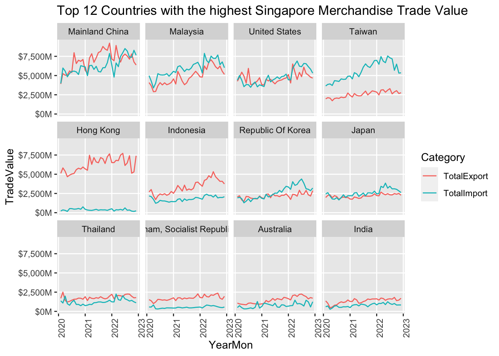
Mainland China has the largest merchandise trade with Singapore, followed by Malaysia and United States. Countries like Mainland China, Malaysia and Indonesia has an increase growth in merchandise trade with Singapore and continue to be an important trade partner. Singapore has a large net positive trade income with Hong Kong in specific. Taiwan on the other hand is a key net export trade partner, with export trade continues to grow. China records a large volatility in trade volume, with larger import in the recent months, which could be due to the COVID-19 lock down in Mainland China. Other partner such as Thailand, Vietnam, Australia and India remain constants in both export and import trade.
3.2 Slope graph
Slope graph is useful to compare changes over a time period by removing the monthly variability. In this analysis, we are going to discover the yearly changes of our key trade partners and compare the rate of changes among countries.
Newggslopegraph is used to build the slopegraph, which shows the Total Import trade value in 2020, 2021 and 2022 for top 12 Merchandise Trade Partners.
#Calculate the sum of Import and Export trade by year and country, and filter the top 12 partners
Combined_TopImporters_Year <- Combined %>%
filter(Country %in% Top_countries$Country)%>%
group_by(Country, Year) %>%
summarize(TotalImport = sum(`Trade Value Import`))%>%
mutate(TotalImport = TotalImport/1000000)
Combined_TopExporters_Year <- Combined %>%
filter(Country %in% Top_countries$Country)%>%
group_by(Country, Year) %>%
summarize(TotalExport = sum(`Trade Value Export`))%>%
mutate(TotalExport = TotalExport/1000000)# Plot slopegraph to shows the import trade volume changes by year
newggslopegraph(dataframe = Combined_TopImporters_Year,
Times = Year,
Measurement = TotalImport,
Grouping = Country,
Title = "Imports by Top 10 Largest Importers in million dollars",
SubTitle = "2020 - 2022",
Caption = NULL)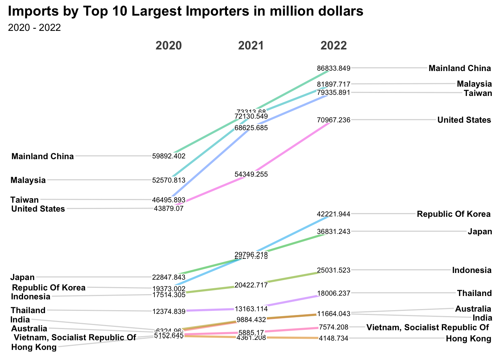
Mainland China, Malaysia, Taiwan, United States remains as the top 4 largest importers from 2020 to 2022 and continue to see a high growth in import trade. However, Import from Korea has exceed Japan to become the fifth largest importer to Singapore. Australia import has also surpassed India to be Singapore ninth largest importer.
Another slopegraph is built to show the Total Export trade value in 2020, 2021 and 2022 for top 12 Merchandise Trade Partners.
# Plot slopegraph to shows the export trade volume changes by year
newggslopegraph(dataframe = Combined_TopExporters_Year,
Times = Year,
Measurement = TotalExport,
Grouping = Country,
Title = "Exports by Top 10 Largest Exporters in million dollars",
SubTitle = "2020 - 2022",
Caption = NULL)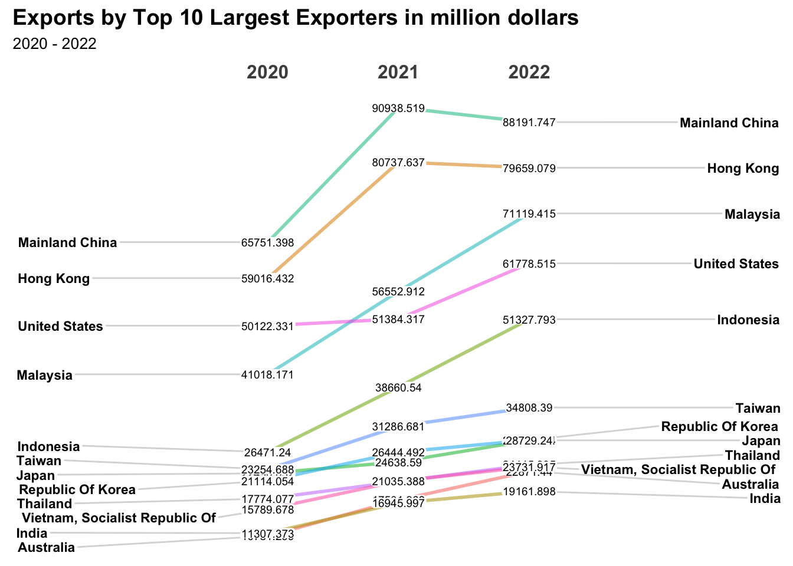
Mainland and China continues to be Singapore top 2 exporters from 2020 to 2022. However, their growth rate has showed down since 2021 which could be due to COVID lock-down. Meanwhile, Malaysia has record a large increase in export trade and surpassed United States to be the third largest exporter. There is also a large growth in Indonesia since 2020.
3.3 Cycle plot
Cycle plot is used to visualise cyclical pattern, especially on cycle correlated with month-of-the-year pattern. It helps us to understand how values are advancing over a period of time.
In this scenario, Cycle plot is used to illustrate the cyclical pattern for our key Import and Export trade partners, to see if there are significance seasonality in trades.
I used a function to help to re-create cycleplot for the top 12 largest import and export partners.
Below are the code chunks how I am able to construct it:
#Compile the dataframe and calculate the average import and export by country and month-year
Combined_Quarter <- Combined %>%
filter(Country %in% Top_countries$Country)%>%
group_by(Country, Month, Year) %>%
summarize(AvgImport = mean(`Trade Value Import`), AvgExport = mean(`Trade Value Export`)) %>%
mutate(AvgImport = AvgImport/1000000) %>%
mutate(AvgExport = AvgExport/1000000)#Create a function to plot the cycleplot for each import countries
plotImportCountry <- function(Combined_Quarter, CountryName) {
Country <- Combined_Quarter %>%
filter(Country == CountryName)
#Calculate the average import by month
hline.data <- Country %>%
group_by(Month) %>%
summarise(avgimport = mean(AvgImport))
#plot the graph by ggplot and facet
ggplot() +
geom_line(data=Country,
aes(x=Year,
y=AvgImport,
group=Month),
colour="black") +
geom_hline(aes(yintercept=avgimport),
data=hline.data,
linetype=6,
colour='blue',
size=0.5) +
facet_grid(~Month) +
labs(title = paste("Import from", CountryName, "from 2020 Jan to 2022 Dec")) +
xlab("") +
ylab("Import Value in million dollar") +
theme(axis.text.x = element_text(angle = 90, vjust = 1, hjust=1))
}
#Repeat for top 12 import countries in the order of total trade value
for(country in countryorder) {
print(plotImportCountry(Combined_Quarter, country))
}
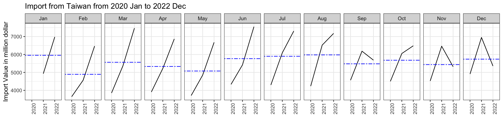
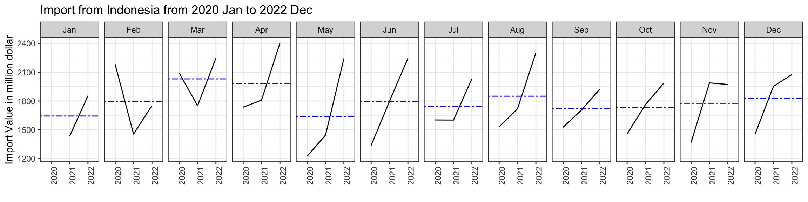
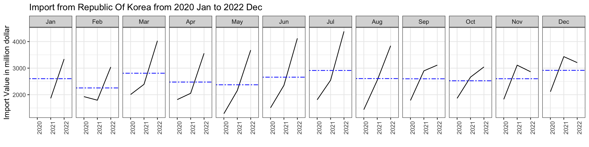
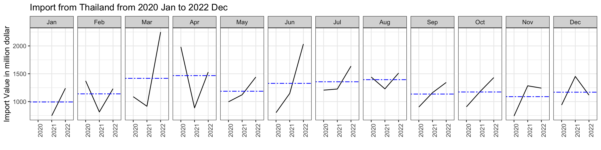
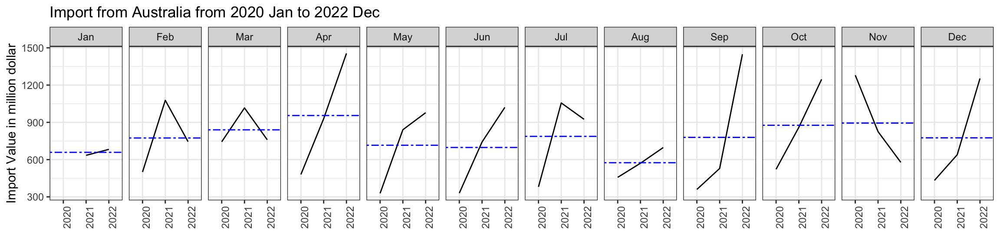
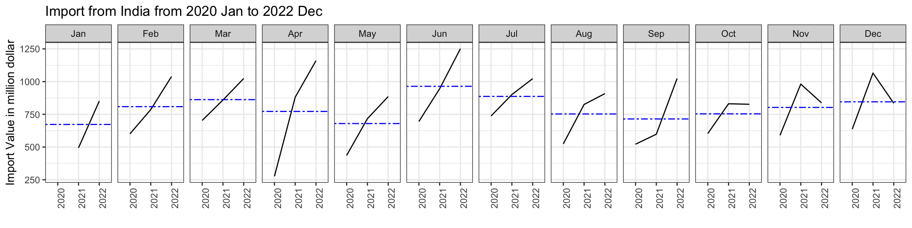
Most countries shows a positive growth in import from 2020 to 2022, especially for the months of Q3 & Q4 . China, take an example, has a lower import in February due to Lunar New Year Holiday. Vietnam, in contrast, has a very high import in April in particular. For Malaysia, the overall trend has been stable over for all months.
#Create a function to plot the cycleplot for each export countries
plotExportCountry <- function(Combined_Quarter, CountryName) {
Country <- Combined_Quarter %>%
filter(Country == CountryName)
#Calculate the average import by month
hline.data <- Country %>%
group_by(Month) %>%
summarise(avgexport = mean(AvgExport))
#plot the graph by ggplot and facet
ggplot() +
geom_line(data=Country,
aes(x=Year,
y=AvgExport,
group=Month),
colour="black") +
geom_hline(aes(yintercept=avgexport),
data=hline.data,
linetype=6,
colour='blue',
size=0.5)+
facet_grid(~Month) +
labs(title = paste("Export to", CountryName, "from 2020 Jan to 2022 Dec")) +
xlab("") +
ylab("Export Valuein million dollar") +
theme(axis.text.x = element_text(angle = 90, vjust = 1, hjust=1))
}
#Repeat for top 12 import countries in the order of total trade value
for(country in countryorder) {
print(plotExportCountry(Combined_Quarter, country))
}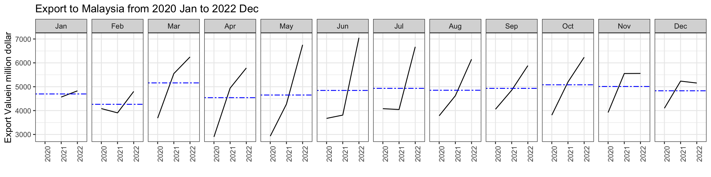
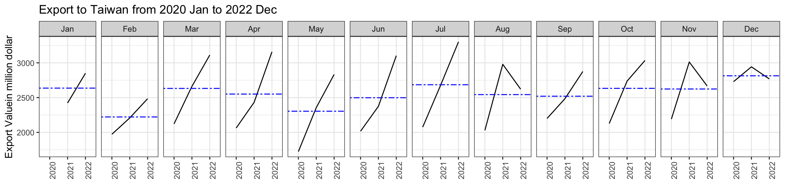
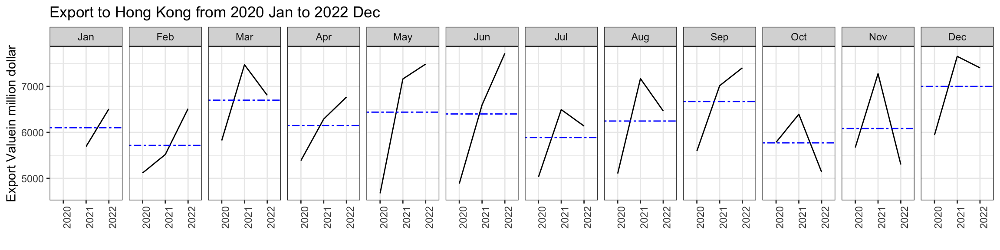
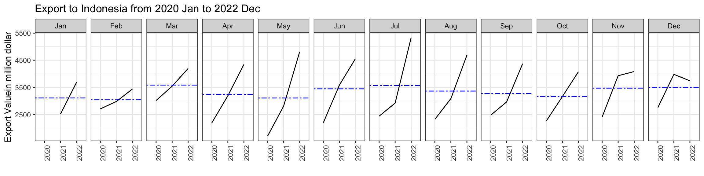
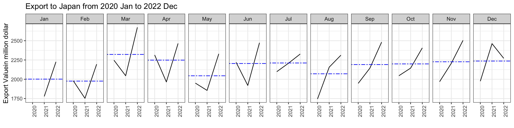
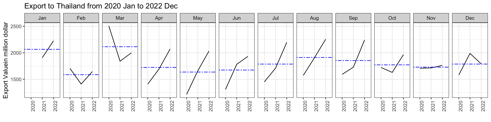
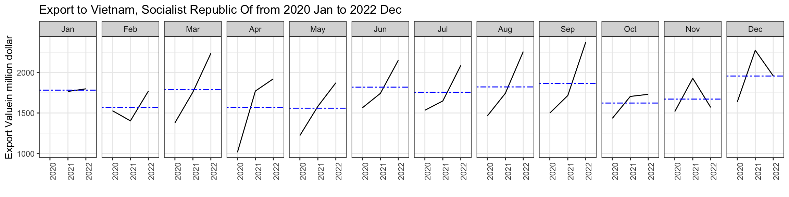
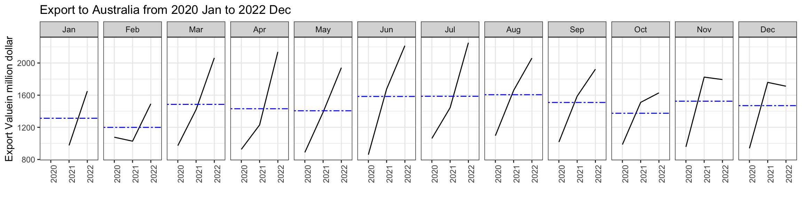
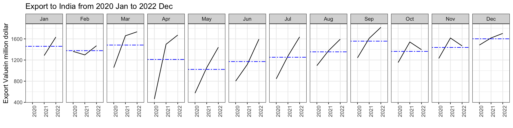
4. Data Insights
Here are some high level observation through the whole analysis:
Overall
The world trade is affected by COVID in these 2 years, and lead to some hocky stick pattern in terms of trade value. There are some drops Apr 2020 and Feb 2022, but we also see recover in Apr 2021. However, the recent trade has not been optimistic which might represents the worldwide economic downturn due to political and economic instability.
China
China is one of Singapore’s largest importer and Exporter, but we also can see the regent volatility in trade volume. There are bigger import growth then export growth, which might be due to the recent COVID lock-down and the slow down of manufacturing production.
Malaysia
Malaysia is the second largest trade partner with Singapore, which shows a more stable trend in both import and export in these 2 years. It could be because of the proximity of distance, the trade is less interrupted by the border closure and supply chain issues. It is also a country with less seasonal monthly variance in trades and remain stable for all 12 months in a year.
Taiwan and Hong Kong
These 2 cities locations have interesting trend - Hong Kong is a key net exporter for Singapore and Taiwan is the key net importer. It could be because Hong Kong do not have much manufacturing and merchandise to export, while Taiwan is one of the key location that produce semi-conductor and high-tech components. This could be related to the technological industry development in Singapore and can foresee this trend will remains in the coming years.